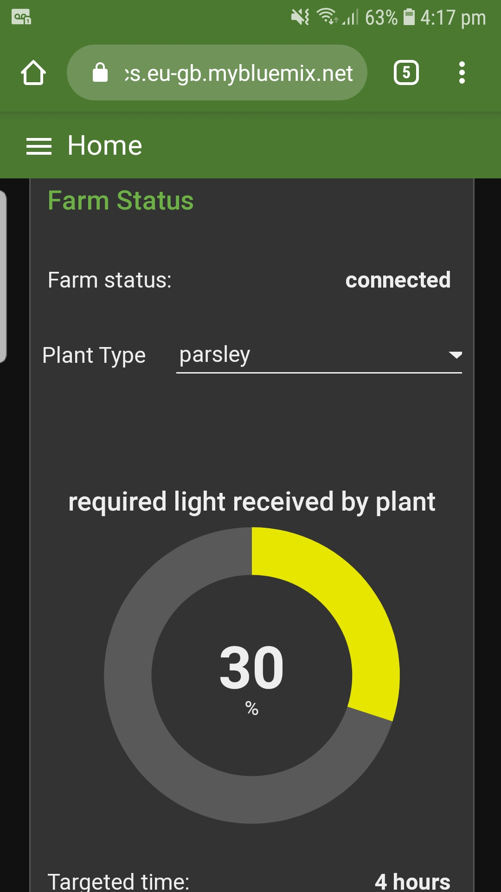
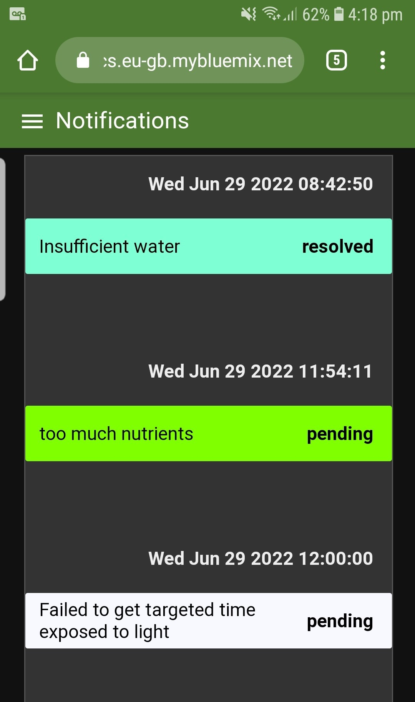
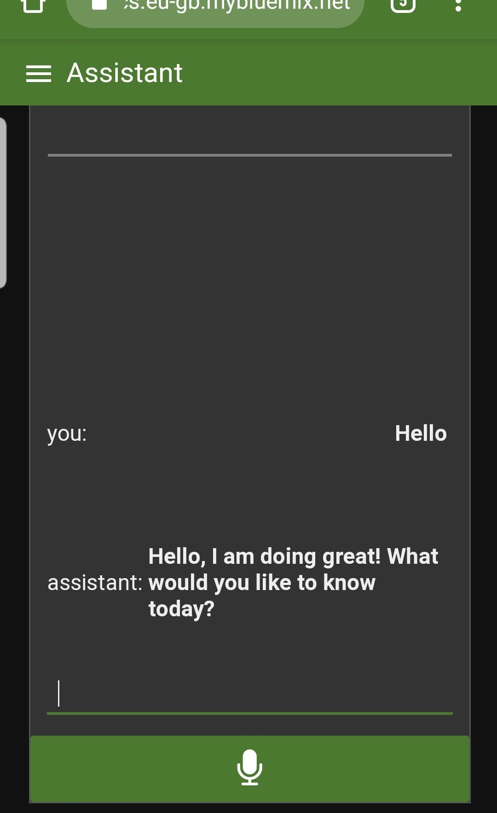

Projects
Vertical Hydroponics Farm - June 2022
Github Link

The vertical hydroponic farm is an IoT project in collaboration with IBM.
The product is targeted at LEDC areas, where access to water is not guaranteed. A vertical hydroponics system has been proven to reduce water usage and also reduce the space needed to plant the same amount of crops. The crops are also less likely to be exposed to plant diseases as no soil is used.
The project has both hardware and software prospects. For the hardware part, various sensors were used to monitor the growing environment of the plants, i.e. water level sensor, light sensor and total dissolved solid sensor. UPVC pipes were used to build the mainframe of the system. A reservoir is used to store water that is recycled through the plants constantly. A MOSFET-powered circuit is used to power the water pump, peristaltic pump and LED lights.



A companion app is also built on Node-RED to enable users to monitor the app. Users are able to customise the optimal growing environment of the plants or choose a preset option based on the name of the plant. Users can also monitor the conditions of the plants through our visualisation tools such as graphs.
A voice assistant system is also integrated into the system. The system is built using IBM's Speech-to-Text, Text-to-Speech Watson Assistant. The users then can give voice commands to the system through the app, such as "Check water level" which the system would then response with the most appropriate answer such as "The water level is insufficient. Please add more water into the reservoir." The user can also interact with the assistant by saying things like "Hello".